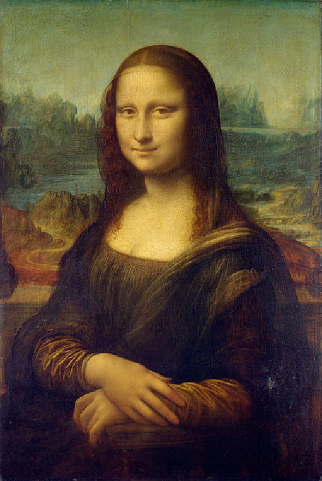

เลโอดาร์โน ดา วินชี เป็นชาวอิตาลี ซึ่งเป็นอัจฉริยบุคคลที่มีความสามารถหลากหลายด้าน คือเป็นทั้งสถาปนิกแบบเรอเนซองส์ นักดนตรี นักกายวิภาค นักประดิษฐ์ วิศวกร ประติมากร นักเรขาคณิต นักวาดภาพ. เลโอนาร์โด ดา วินชี มีผลงานศิลปะที่มีชื่อเสียงหลายชิ้นที่ผู้คนรู้จักกันดี เช่น อาหารค่ำมื้อสุดท้าย (The Last Supper) และ โมนา ลิซ่า (Mona Lisa) ผลงานของ เลโอนาร์โด ดา วินชี ยังสร้างคุณประโยชน์ให้กับวิชากายวิภาคศาสตร ดาราศาสตร์ รวมถึงวิศวกรรมโยธา ด้วยความที่เป็นคนที่มีจิตวิญญาณที่รักในศาสตร์หลายแขนง เลโอนาร์โด ดา วินชี ทำให้เกิดจิตวิญญาณของสหวิทยาการในสมัยฟื้นฟูศิลปวิทยาการ และกลายเป็นบุคคลสำคัญของยุคนั้น
เลโอนาร์โด ดา วินชี เกิดเมื่อวันที่ 15 เมษายน ค.ศ 1452 สถานที่ที่เขาเกิดอยู่ห่างจากหมู่บ้านวินชี ในประเทศอิตาลี ไปราวสองกิโลเมตร บิดาของเขา คือ นายแซร์ ปีเอโร ดา วินชี เป็นพนักงานรับรองเอกสารของรัฐ มารดาชื่อคาตารีนา เป็นสาวชาวนา เคยมีคนอ้างว่านางคาตารีนาเป็นทาสสาวจากประเทศแถบตะวันออกในครอบครองของปีเอโร แต่ก็ไม่มีหลักฐานใดสนับสนุนการกล่าวอ้างนี้อย่างเด่นชัด ในสมัยนั้นยังไม่มีมาตรฐานการเรียกชื่อและนามสกุลที่เป็นที่ยอมรับกันอย่างแพร่หลายในทวีปยุโรปทำให้ชื่อและนามสกุลของดา วินชี ที่แท้จริงคือ เลโอนาร์โด ดิ แซร์ ปีเอโร ดา วินชี ซึ่งหมายความว่าเลโอนาร์โด บุตรชายของปีเอโร แห่ง วินชี แต่เลโอนาร์โดเองก็มักจะลงลายเซ็นในงานของเขาอย่างง่ายๆ ว่า เลโอนาร์โด หรือไม่ก็ ข้าเอง เลโอนาร์โด เอกสารสำคัญส่วนใหญ่ระบุว่าผลงานของเขาเป็นของเลโอนาร์โด โดยไม่มี ดา วินชี พ่วงท้าย ทำให้เข้าใจได้ว่าเขาไม่ได้ใช้นามสกุลของบิดาเนื่องจากเป็นบุตรนอกสมรสนั่นเอง
โดยมีการระบุชื่อว่าในตอนแรกว่า กาเตรีนา บูตี เดล วักกา และล่าสุดระบุชื่อว่า กาเตรีนา ดี เมโอ ลิปปี โดยมาร์ติน เคมป์ นักประวัติศาสตร์ ยังคงไม่แน่ใจว่าเลโอนาร์โดเกิดที่ใด บันทึกดั้งเดิมจากคำบอกเล่าของคนในท้องถิ่น โดยนักประวัติศาสตร์เอ็มมานูเอล เรเป็ตตี กล่าวว่าเขาเกิดที่ แอนชิอาโน หมู่บ้านเล็ก ๆ ในชนบทที่จะให้ความเป็นส่วนตัวเพียงพอสำหรับการกำเนิดนอกกฎหมาย แต่ก็ยังเป็นไปได้ที่เขาเกิดในบ้านในเมืองฟลอเรนซ์ พ่อแม่ของเลโอนาร์โดแต่งงานแล้วแยกกันหลังจากปีที่เขาเกิด กาเตรีนา ซึ่งมักถูกระบุว่าเป็น กาเตรีนา บูตี เดล วักกา ผู้ที่ต่อมาแต่งงานกับช่างฝีมือท้องถิ่น อันโตนิโอ ดิ ปิเอโร บูติ เดล วัคกา มีการเสนอทฤษฎีอื่น ๆ โดยเฉพาะทฤษฎีของนักประวัติศาสตร์ทางศิลปะ มาร์ติน เคมพ์ โดยเขาสันนิษฐานว่าแม่ของเลโอนาร์โดคือ กาเตรีนา ดี เมโอ ลิปปี เป็นเด็กกำพร้าที่แต่งงานและได้รับความช่วยเหลือจาก เมสแซร์ ปีเอโรและครอบครัว เมสแซร์ ปีเอโร ได้แต่งงานกับ อัลบิเอรา อามาโดริ และหลังจากที่เธอเสียชีวิตในปี ค.ศ.1462 เขาก็ได้แต่งงานอีกสามครั้ง ทำให้เลโอนาร์โดมีพี่น้องต่างมารดา 12 คนซึ่งอายุน้อยกว่าเขามาก (คนสุดท้ายเกิดเมื่อเลโอนาร์โดอายุ 40 ปี) และเขาแทบไม่ได้ติดต่อกับบรรดาพี่น้องต่างมารดาของเขา
ไม่ค่อยมีใครรู้เกี่ยวกับวัยเด็กของเลโอนาร์โดและส่วนใหญ่มักเป็นเรื่องราวที่เป็นตำนาน ส่วนหนึ่งเป็นเพราะชีวประวัติของเขาในหนังสือชีวิตศิลปิน (1550) จากจอร์โจ วาซาริ นักประวัติศาสตร์ด้านศิลปะในศตวรรษที่ 16[3][6] ตามบันทึกภาษีระบุว่าเขาอาศัยอยู่ที่บ้านของปู่ อันโตนิโอ ดาวินชี ตั้งแต่ในค.ศ.1457 เท่าที่มีข้อมูลแน่ชัด แต่มีความเป็นไปได้ว่าเขาใช้เวลาหลายปีก่อนหน้านั้นในการดูแลแม่ของเขาใน วินชี และมีการสันนิษฐานว่าเขาสนิทสนมกับอาของเขา ฟรันเชสโก ดา วินชี โดยพ่อของเขาน่าจะอยู่ที่ฟลอเรนซ์เกือบตลอดเวลา พ่อของเขาซึ่งมีครอบครัวเป็นทนายมาหลายช่วงอายุคน ได้ตั้งถื่นฐานอย่างเป็นทางการในฟลอเรนซ์ตั้งแต่ปีค.ศ. 1469 เท่าที่มีข้อมูล และประสบความสำเร็จในอาชีพการงาน เลโอนาร์โดได้รับการศึกษาขั้นพื้นฐานเท่านั้นในการเขียน (ภาษาพื้นถิ่น) การอ่าน และคณิตศาสตร์ อาจเป็นเพราะความสามารถทางศิลปะของเขาได้รับการยอมรับตั้งแต่เนิ่นๆ ดังนั้นครอบครัวของเขาจึงตัดสินใจที่จะให้ความสนใจกับทางด้านนั้นมากกว่า
ต่อมา เลโอนาร์โดได้บันทึกความทรงจำแรกสุดของเขา ซึ่งปัจจุบันอยู่ใน โคเด็กซ์ แอตลานติคัส ว่าขณะที่เขียนเกี่ยวกับการบินของนก เขาจำได้ว่าตอนยังเป็นทารกเมื่อมีว่าวมาที่เปลของเขาและอ้าปากของเขาด้วยหางของมัน ในปัจจุบันนักวิจารณ์ยังคงถกเถียงกันว่าเรื่องนี้เป็นความทรงจำจริงหรือเป็นเพียงจินตนาการในสมัยนั้นยังไม่มีมาตรฐานการเรียกชื่อและนามสกุลที่เป็นที่ยอมรับกันอย่างแพร่หลายในทวีปยุโรป ทำให้ชื่อและนามสกุลของดา วินชี ที่แท้จริงคือ ซึ่งหมายความว่า แต่เลโอนาร์โดเองก็มักจะลงลายเซ็นในงานของเขาอย่างง่าย ๆ ว่า เลโอนาร์โด หรือไม่ก็ ข้าเอง เลโอนาร์โด เอกสารสำคัญส่วนใหญ่ระบุว่าผลงานของเขาเป็นของ เลโอนาร์โด โดยไม่มี ดา วินชี พ่วงท้าย ทำให้เข้าใจได้ว่าเขาไม่ได้ใช้นามสกุลของบิดาเนื่องจากเป็นบุตรนอกสมรสนั่นเอง
มื่อถึงปี ค.ศ.1472 เมื่ออายุได้ 20 ปี เลโอนาร์โดได้เป็นอาจารย์ในสมาคมช่างนักบุญลูกา ซึ่งเป็นสมาคมศิลปินและแพทย์ แต่แม้พ่อของเขาตั้งโรงปฏิบัติงานให้กับเขา ความผูกพันของเขากับแวร์รอกกีโอทำให้เขายังคงทำงานร่วมกันและอยู่กับเขาต่อไป ผลงานที่เก่าแก่ที่สุดเท่าที่มีหลักฐานของเลโอนาร์โดคือภาพวาดด้วยปากกาและหมึกของหุบเขาอาร์โน ในปี ค.ศ.1473 ตามที่วาซารีกล่าวไว้ว่า ขณะที่เลโอนาร์โดยังหนุ่มเขาเป็นคนแรกที่แนะนำให้ทำให้แม่น้ำอาร์โนเป็นช่องทางเดินเรือระหว่างฟลอเรนซ์และปิซา
ในเดือนมกราคม ค.ศ.1478 เลโอนาร์โดได้รับมอบหมายให้ลงสีแท่นบูชาสำหรับโบสถ์เซนต์เบอร์นาร์ดใน ปาลาซโซ เวคคิโอ ซึ่งบ่งบอกถึงความเป็นอิสระของเขาจากสตูดิโอของ แวร์รอกกีโอ นักเขียนชีวประวัตินิรนามยุคแรกที่รู้จักกันในชื่อ แอโนมิโม แกดดิอาโน อ้างว่าในปี 1480 เลโอนาร์โดได้ไปอาศัยอยู่กับ ตระกูลเมดิซี และมักจะทำงานในสวนของ ปิแอซซ่า ซาน มาร์โค ในเมืองฟลอเรนซ์ ซึ่งเป็นที่ตั้งของสถาบัน นีโอเพลโตนิค ของศิลปิน กวี และนักปรัชญาที่ก่อตั้งโดยตระกูลเมดิซี และในเดือนมีนาคม ค.ศ.1481 เขาได้รับมอบหมายจากนักบวชแห่งซานโดนาโตในสโคเปโตเพื่อวาดภาพการนมัสการของโหราจารย์ งานเหล่านี้เป็นงานที่เลโอนาร์โดทำไม่เสร็จแลพถูกทิ้งไปเมื่อเลโอนาร์โดต้องรับงานของ ดยุคแห่งมิลาน ลูโดวีโก สฟอร์ซา เลโอนาร์โดได้เขียนจดหมายถึง สฟอร์ซา ซึ่งอธิบายถึงสิ่งต่าง ๆ ที่เขาสามารถทำได้ในด้านวิศวกรรมและการออกแบบอาวุธ และกล่าวว่าเขาสามารถวาดภาพได้ และเขาได้นำเครื่องสายเงิน ไม่ว่าจะเป็นลูตหรือไลร์ติดตัวมาด้วย
เลโอนาร์โดได้ไปยังบ้านของเมดิชิพร้อมกับอัลแบร์ตีและได้รู้จักนักปรัชญาด้านมนุษยนิยมที่มีอายุมากกว่าเขาเช่น มาร์ซีลีโอ ฟีชีโน ผู้แสดงลัทธินีโอพลาโทผ่านพวกเขา คริสโตฟอโร ลันดีโน่ ผู้เขียนความเห็นเกี่ยวกับงานเขียนคลาสสิก และ จอห์น อาร์ไกโรปูรอส ครูสอนภาษากรีกและผู้ที่แปลงานของอริสโตเติล และผู้ที่มีความเกี่ยวข้องกับ สถาบันเพลโตของตระกูลเมดีซี ก็คือปิโก เดลลา มิแรนโดลา กวี และปราชญ์หนุ่มผู้มีความเฉลียวฉลาด[8][15][21] และในปี ค.ศ. 1482 โลเรนโซ เด เมดีซีได้ส่งเลโอนาร์โดไปเป็นเอกอัครราชทูต เพื่อสัมพันธไมตรีกับ ลูโดวีโก สฟอร์ซา ผู้ปกครองเมืองมิลานในช่วงระหว่างปี ค.ศ.1479 ถึง ค.ศ.1499
เลโอนาร์โดทำงานในมิลานตั้งแต่ปี ค.ศ.1482 ถึง ค.ศ.1499 เขาได้รับมอบหมายให้วาดภาพ พระแม่มารีแห่งภูผา สำหรับภราดรภาพแห่งแม่พระปฏิสนธินิรมล และ อาหารค่ำมื้อสุดท้าย สำหรับซานตามารีอาเดลเลกราซีเอในฤดูใบไม้ผลิปี ค.ศ.1485 เลโอนาร์โดได้เดินทางไปฮังการีในนามของตระกูลสฟอร์ซาเพื่อพบกับพระเจ้าแมทเธียส คอร์วินัส และได้รับมอบหมายจากเขาให้วาดภาพแม่พระและพระกุมาร เลโอนาร์โดเคยทำงานในโครงการอื่นๆ มากมายสำหรับตระกูลสฟอร์ซา ทั้งการเตรียมขบวนแห่และการประกวดในโอกาสพิเศษ ทั้งภาพวาดและแบบจำลองไม้สำหรับการแข่งขันออกแบบหอหลังคาโดมของอาสนวิหารมิลาน (ซึ่งเขาได้ถอนตัวในภายหลัง) และแบบจำลองสำหรับอนุสาวรีย์ขี่ม้าขนาดใหญ่สำหรับ ฟรานเชสโก สฟอร์ซา บรรพบุรุษของลูโดวิโก รูปปั้นนี้มีขนาดใหญ่ใกล้เคียงกับรูปปั้นขี่ม้าขนาดใหญ่เพียงสองแห่งของยุคฟื้นฟูศิลปวิทยา ได้แก่ อนุสาวรีย์กัตตาเมลาตา ของ โดนาเตลโล ในปาดัวและ อนุสาวรีย์บาร์โตโลมีโอ คอลลีโอนี ของ แวร์รอกกีโอ ในเมืองเวนิส ที่รู้จักกันในนาม กราน คาวาลโล่ เลโอนาร์โดสร้างแบบจำลองสำหรับม้าและวางแผนอย่างละเอียดสำหรับการหล่อโลหะ แต่ในเดือนพฤศจิกายน ค.ศ.1494 ลูโดวิโกได้มอบเหรียญทองแดงให้กับพี่เขยเพื่อใช้เป็นปืนใหญ่เพื่อปกป้องเมืองจากพระเจ้าชาร์ลที่ 8 แห่งฝรั่งเศส
ต่อมาอิล ซาไลอิโน่ ได้เข้ามาเป็นผู้ช่วยของเลโอนาร์โดในปี ค.ศ.1490 ได้จัดทำรายการความผิดของเขา ซึ่งถูกเรียกว่า"โจร คนมุสา คนดื้อรั้น และคนตะกละ" หลังจากที่เลโอนาร์โดทำเงินและของมีค่าให้สูญเสียไปแล้วอย่างน้อยห้าครั้งและเสี่ยงดวงกับเรื่องเสื้อผ้า อย่างไรก็ตามเลโอนาร์โดปฏิบัติต่อซาไลเป็นอย่างดี และเขายังอยู่กับเลโอนาร์โดต่อไปอีก 30 ปี ซาไล วาดภาพหลายภาพภายใต้ชื่อ อันเดรอา ซาไล ถึงแม้ว่าวาซาริ จะอ้างว่า เลโอนาร์โดเป็นผู้สอนซาไลในหลายๆเรื่องเกี่ยวกับการวาดภาพ แต่งานของซาไลถือว่ามีคุณธรรมทางศิลปะน้อยกว่าผลงานอื่นๆ ในบรรดาลูกศิษย์ของ เลโอนาร์โด เช่น มาร์โค ดี อ็อกจิโอโน่ และ โบลตราฟฟิโอ
เมื่อลูโดวีโก สฟอร์ซาถูกโค่นล้มโดยฝรั่งเศส ในปี ค.ศ.1500 เลโอนาร์โดหนีจากมิลานไปเวนิส พร้อมด้วยซาไล ผู้ช่วยของเขา และเพื่อนของซาไล ลูกา ปาซิโอลิ นักคณิตศาสตร์ ณ เมืองเวนิส เลโอนาร์โดได้ทำงานเป็นสถาปนิกและวิศวกรด้านการทหาร โดยเขาได้คิดค้นวิธีการป้องกันเมืองจากการโจมตีทางเรือ เมื่อเขากลับมาที่ฟลอเรนซ์ในปี ค.ศ.1500 เขาและครอบครัวได้รับการต้อนรับโดยพระภิกษุสงฆ์ที่อาราม ซานติสสิมา อันนุนซีอาตา และได้รับการจัดสรรพื้นที่สำหรับโรงปฏิบัติงานของเขา ตามบันทึกของวาซาริ เลโอนาร์โดได้วาดภาพพระนางพรหมจารีและพระกุมารกับนักบุญอันนาและยอห์นผู้ให้บัพติศมา ผลงานที่ได้รับความชื่นชมจน "ชาย[และ]หญิง ทั้งเด็กและผู้ใหญ่" แห่ชม "ราวกับว่าพวกเขากำลังไปงานรื่นเริง"
ในปี ค.ศ.1502 ณ เมืองเชเซนา เลโอนาร์โดได้เข้าทำงานเป็นสถาปนิกและวิศวกรด้านการทหาร และเดินทางไปทั่วอิตาลีพร้อมกับผู้อุปถัมภ์ของเขาให้กับ ซีซาร์ บอร์เจีย ลูกของพระสันตะปาปาอเล็กซานเดอร์ที่ 6 เลโอนาร์โดได้สร้างแผนที่ฐานที่มั่นของซีซาร์ บอร์เจียซึ่งเป็นผังของเมืองอิโมลา เพื่อที่จะได้รับการอุปถัมภ์ของเขา เมื่อซีซาร์ได้เห็นผังเมืองนั้นแล้วก็ได้แต่งตั้งให้เลโอนาร์โดเป็นหัวหน้าวิศวกรและสถาปนิกทางทหารของเขา และในปีเดียวกัน เลโอนาร์โดได้จัดทำแผนที่หุบเขาเคียน่า แคว้นตอสคานา สำหรับผู้อุปถัมภ์ของเขา เพื่อให้มีภาพซ้อนทับที่ดีขึ้นของแผ่นดินและตำแหน่งทางยุทธศาสตร์ที่มากขึ้น โดยเขาได้จัดทำแผนที่นี้พร้อมกับโครงการก่อสร้างเขื่อนจากทะเลไปยังเมืองฟลอเรนซ์ เพื่อให้มีแหล่งน้ำในทุกฤดูกาล
มนา ลิซ่า (Mona Lisa) หรือ ลา โฌกงด์ (La Gioconda, La Joconde) คือภาพวาดสีน้ำมัน สูง 77 เซนติเมตร กว้าง 53 เซนติเมตร วาดโดยเลโอนาร์โด ดา วินชี ในคริสต์ศตวรรษที่ 16 ระหว่าง ค.ศ.1503 ถึง ค.ศ 1507 เป็นภาพที่ทั่วโลกรู้จักกันดีภาพหนึ่ง ในฐานะสุภาพสตรีที่มี รอยยิ้มอันเป็นปริศนา ที่ไม่รู้ว่าเธอจะยิ้ม หัวเราะ หรือว่าร้องไห้กันแน่ ปัจจุบันภาพนี้อยู่ในความครอบครองของรัฐบาลฝรั่งเศส และเก็บรักษาอยู่ที่พิพิธภัณฑ์ลูฟร์ (Musée du Louvre) ณ กรุงปารีส ประเทศฝรั่งเศส
คำว่า โมนาลิซ่า เป็นชื่อที่ จอร์จีโอ วาซารี ซึ่งเป็นศิลปินและนักชีวประวัติชาวอิตาลีเป็นคนตั้งให้หลังจากเลโอนาร์โด ดา วินชี เสียชีวิตไปแล้ว 31 ปี ในหนังสือที่เขาตีพิมพ์กล่าวถึงผู้หญิงที่นั่งอยู่ในรูปนั้นว่าคือ ลีซ่า เกอราร์ดีนี ภรรยาของขุนนางและนักธุรกิจผู้มั่งคั่ง ชาวเมืองฟลอเรนซ์นามว่า ฟรานเซสโก้ เดล กิโอคอนดา (Francesco del Giocondo)
คำว่า โมนา (Mona) ในภาษาอิตาลีนั้นก็คือคำว่า มาดอนนา (Madonna) หรือ คุณผู้หญิง (My Lady) หรือ มาดาม (Madam) ในภาษาอังกฤษ ดังนั้นความหมายของชื่อนั้นก็คือ มาดาม ลิซ่า แต่ในปัจจุบัน บางครั้งก็จะใช้คำว่า มอนนา ลิซ่า (Monna Lisa) แทน เนื่องจากภาษาอิตาลีคำว่ามาดอนนานั้น ส่วนมากจะใช้คำย่อว่า มอนนา (Monna)
ในปี ค.ศ. 1516 (พ.ศ. 2059) เลโอดาร์โน ดา วินชี ได้นำภาพจากอิตาลีไปที่ฝรั่งเศส ด้วยพระราชประสงค์ของพระเจ้าฟรองซัวส์ที่ 1 ที่ทรงปราถนาที่จะให้ศิลปินทั้งหลายมารวมตัวทำงานกันที่ Clos Lucé ใกล้กับปราสาทในเมืองอัมบัวส์ และยังทรงให้ เลโอนาร์โด ดา วินชี วาดพระบรมฉายาลักษณ์ของพระองค์อีกด้วย หลังจากนั้นพระองค์ก็ทรงซื้อภาพโมนาลิซ่า ในราคา 4,000 เอกือ
ในปี ค.ศ. 1519 (พ.ศ. 2062) เลโอดาร์โน ดา วินชี ได้เสียชีวิตที่เมืองอัมบัวส์ ประเทศฝรั่งเศส รวมอายุได้ 63 ปี
ในช่วงแรก ภาพโมนาลิซ่าถูกนำไปเก็บไว้ที่ พระราชวังฟงเตนโบล ต่อมาก็ถูกย้ายไปเก็บไว้ที่พระราชวังแวร์ซาย หลังจากสิ้นสุดการปฏิวัติฝรั่งเศส ภาพนี้ก็ถูกไปนำเก็บไว้ที่พิพิธภัณฑ์ลูฟร์ ในห้องสรงของพระเจ้านโปเลียนที่ 1ในพระราชวังทุยเลอรี แล้วในที่สุดก็ได้กลับมาที่พิพิธภัณฑ์ลูฟร์เหมือนเดิม
ในช่วงสงครามฝรั่งเศส-รัสเซีย ระหว่างปี ค.ศ. 1870 - ค.ศ. 1871 ภาพโมนา ลิซ่า ได้ถูกนำออกจากพิพิธภัณฑ์ และไปซ่อนไว้ในที่ลับแห่งหนึ่งในประเทศฝรั่งเศส